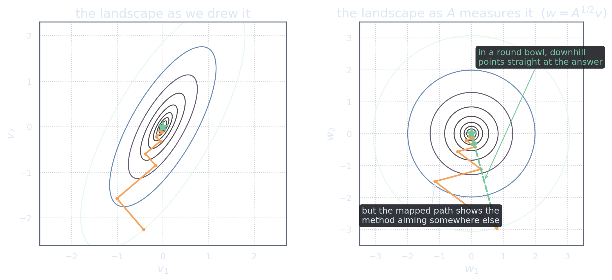

What Exactly Does “Spoiling” Mean?
Act 2 ended with an accusation: each step of steepest descent spoils the minimizations before it. Accusations deserve precision. So let us compute, in general, when one line search damages another, the calculation takes four lines and its answer is the pivot of the entire series.
Suppose that at the point \(v\in\H\) we have just finished an exact line search along a direction \(p\): among all points \(v + tp\), our \(v\) has the least \(J\). From the parabola picture of Act 2, that fact has an exact algebraic expression, the derivative along \(p\) vanishes: \[\ip{Av - f}{p} = 0.\]
Now the method moves on: it takes a step of size \(\beta\) along some new direction \(q\), arriving at \(v' = v + \beta q\). Question: standing at \(v'\), are we still at a minimum along \(p\)? Same test, differentiate \(J\) along \(p\) at the new point: \[\ip{Av' - f}{p} = \ip{A(v+\beta q) - f}{p} = \underbrace{\ip{Av - f}{p}}_{=\,0\ \text{(just finished)}} + \beta\,\ip{Aq}{p} = \beta\,\ip{Aq}{p}.\]
Read the result. The old minimization survives the new step if and only if \[\ip{Aq}{p} = 0.\] Not \(\ip{q}{p}=0\), the Euclidean right angles that steepest descent so scrupulously produces are simply not the relevant condition. The landscape inserts an \(A\) between the two directions before judging them perpendicular.
“Don’t spoil finished work” is not a slogan; it is the equation \(\ip{Aq}{p}=0\). Directions satisfying it are called \(A\)-orthogonal or conjugate. Steepest descent fails precisely because it enforces orthogonality without the \(A\).
The Inner Product the Problem Wanted All Along
The combination \(\ip{Aq}{p}\) earned its own name, so we give it permanent notation: for \(v,w\in\H\), define \[\ipA{v}{w} := \ip{Av}{w}.\] This is not merely a convenient abbreviation. Because \(A\) is self-adjoint and positive definite, \(\ipA{\cdot}{\cdot}\) is a genuine inner product on \(\H\), symmetric, bilinear, and positive, with its own induced norm \[\normA{v} = \sqrt{\ipA{v}{v}} = \sqrt{\ip{Av}{v}}.\] It is called the energy inner product, and \(\normA{\cdot}\) the energy norm: for the physical examples of Act 1 (heat flow, elasticity), \(\tfrac12\normA{v}^2\) literally is the physical energy stored in the configuration \(v\).
Why should we accept a second inner product on the same space, when \(\H\) came with a perfectly good one? Because the landscape itself uses this one. Here is the fact that settles it. Take the master identity of Act 1, centered at the solution \(u\) (so the linear term dies), and read it for an arbitrary point \(v = u + w\): \[J(v) - J(u) = \tfrac12\ip{A(v-u)}{v-u} = \tfrac12\,\normA{v-u}^2.\]
\[J(v) - J(u) = \tfrac12\normA{v-u}^2.\] The height of the landscape above its floor is the squared energy-norm distance to the solution. Descending \(J\) and shrinking the \(A\)-norm error are not two goals that happen to align, they are the same number. Every convergence statement in this series (including the \((\kappa-1)/(\kappa+1)\) rate quoted in Act 2) is naturally a statement about \(\normA{\cdot}\).
The problem \(Au=f\) comes equipped with its own private geometry, in which distance is measured by \(A\). The Euclidean inner product we used in Act 2 was our choice, not the problem’s. The zigzag is what it looks like when a navigator insists on the wrong map.
The World Where the Bowl Is Round
There is a wonderfully concrete way to see this “private geometry”. Since \(A\) is self-adjoint and positive definite, it has a unique self-adjoint positive square root \(A^{1/2}\) (in finite dimensions: keep the eigenvectors, take square roots of the eigenvalues; the operator case is the spectral theorem doing the same thing, the classical “square-root lemma” of operator theory, see Reed & Simon [RS80]). Change variables: \[w = A^{1/2} v.\] In the new variables, the energy inner product of two elements is just their ordinary inner product, since \(\ipA{v_1}{v_2}=\ip{A^{1/2}v_1}{A^{1/2}v_2}\), and the landscape becomes, up to an additive constant, \[J = \tfrac12\norm{w - w_\star}^2 + \text{const}, \qquad w_\star = A^{1/2}u.\] A perfectly round bowl. Every contour a circle.
Recall the first experiment from the panel of Act 2: on a round bowl (\(\kappa=1\)), steepest descent converges in a single step, from anywhere, in a round bowl, downhill points straight at the center. So in the \(w\)-world our problem is trivial. The entire difficulty of the original problem is the mismatch between two rulers: the Euclidean ruler our method used, and the \(A\)-ruler in which the bowl is round.

Two remarks before you play with this picture interactively. (Readers who want this picture drawn many more times, from many more angles, will find it developed at length in Shewchuk’s classic tutorial [She94].)
First: \(A\)-orthogonality demystifies completely in the \(w\)-world. Two directions \(p, q\) are \(A\)-orthogonal exactly when their images \(A^{1/2}p,\ A^{1/2}q\) are ordinary-orthogonal: \[\ipA{p}{q} = \ip{A^{1/2}p}{A^{1/2}q}.\] Conjugate directions are simply directions that are perpendicular on the honest map. The exotic-sounding condition \(\ip{Aq}{p}=0\) is the most familiar condition in geometry, seen through a distorting lens.
Second: it is tempting to conclude “just compute \(A^{1/2}\), work in \(w\), win.” But our toolkit does not contain \(A^{1/2}\), we cannot even apply it without an eigendecomposition, which is far more expensive than the problem we are trying to solve. The stretched world is a thinking device, not a computing device. The challenge is therefore sharply posed: achieve the round-world behaviour while computing only in the original variables, with the original toolkit.
The no-spoiling condition is \(\ipA{q}{p}=0\): perpendicularity in the energy inner product, i.e.\ on the map where the bowl is round. The error we are actually shrinking is \(\normA{v-u}\), and it is the same thing as the height of \(J\).
The diagnosis is complete, and it comes with a prescription. We should run line searches along directions that are pairwise \(A\)-orthogonal, then, by the four-line computation that opened this act, no step can ever spoil a previous one. What does a method built on that principle look like, and what does “progress that cannot be undone” buy us precisely? That is Act 4, including a small interactive miracle: pick any first direction on a two-dimensional landscape, and watch the method finish in exactly two steps.
References
- Jonathan R. Shewchuk (1994). “An Introduction to the Conjugate Gradient Method Without the Agonizing Pain.” Carnegie Mellon University. The stretched-coordinates picture of this act is drawn there at leisurely, generous length. free PDF (CMU)
- Michael Reed and Barry Simon (1980). Methods of Modern Mathematical Physics I: Functional Analysis, revised and enlarged edition. Academic Press. Spectral theorem and the square-root lemma for positive operators. book page (Elsevier/ScienceDirect)